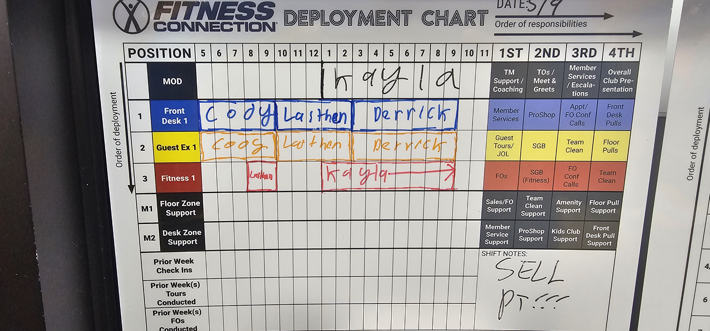
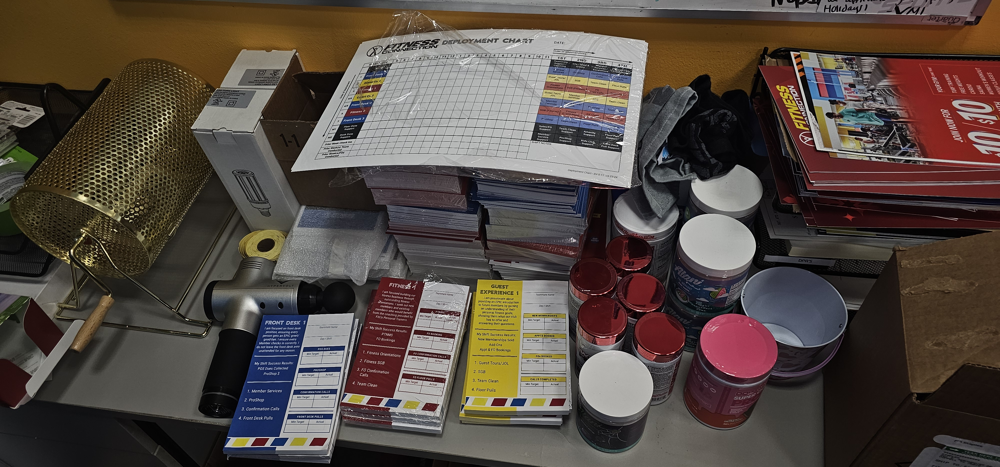
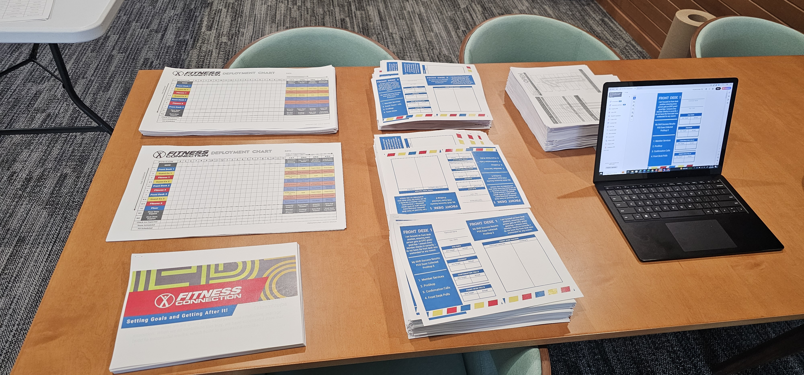
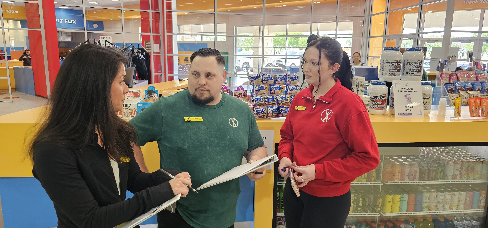
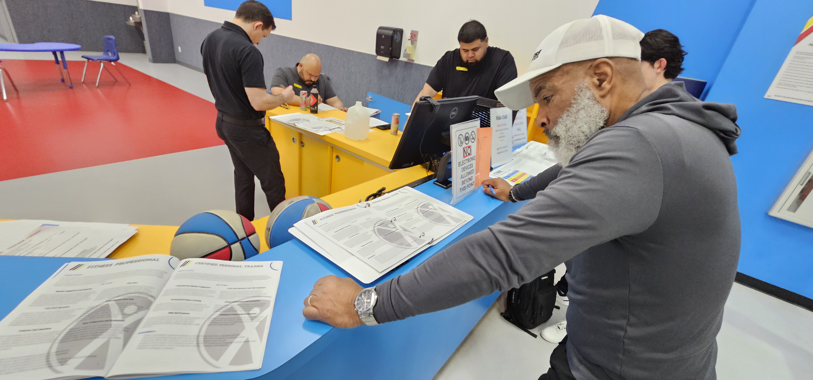
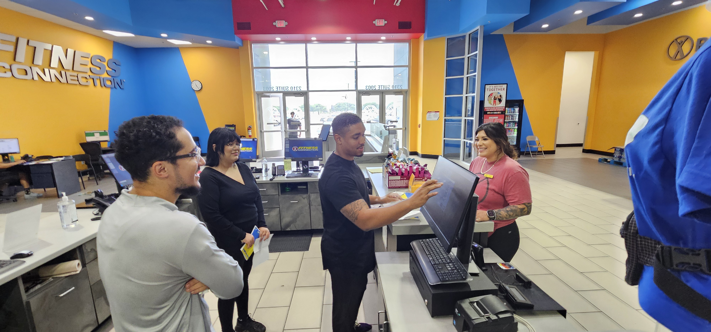
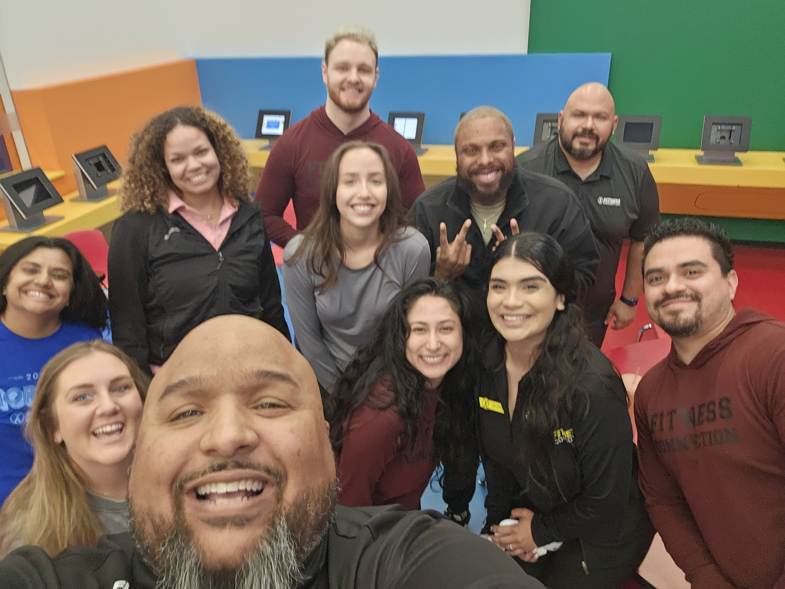
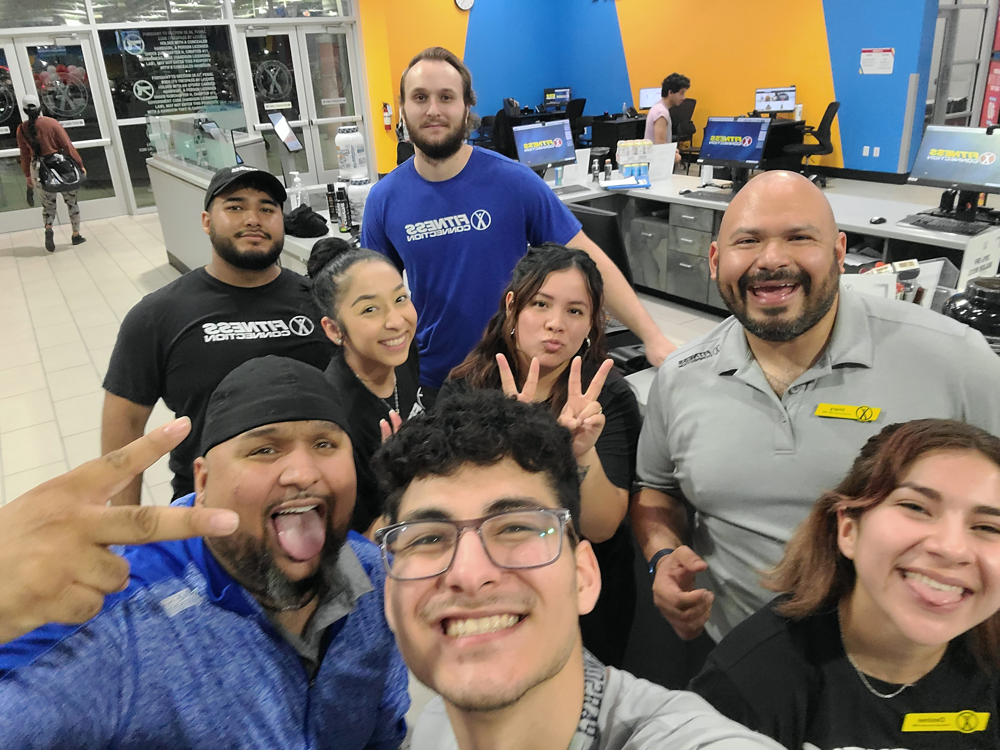

Case Study — Learning & Development
My path into L&D wasn't planned. It was a natural evolution from operations and communications. When you're building processes, restructuring teams, and rolling out new ways of working, you quickly learn that the build is only half the job. The other half is getting the information to stick.
Live Interactive Demos
Every module below is a fully functional, self-contained training experience I designed and built. No LMS required. Click to try them live.
H.Y.P.E. Program
Part of the H.Y.P.E. (Hire Your Perfect Employee) training program
Managers were spending 30 minutes on phone screens that should have taken 10. This module teaches phone screen best practices through a simulated candidate call, knowledge checks, and a self-assessment checklist.
Onboarding
Part of the onboarding experience for Connection Specialists and Fitness Consultants
An interactive mobile-first onboarding experience for new hires at Fitness Connection. Walks through the first 7 days step by step: orientation, front desk training, systems, customer service, sales, fitness floor, and the first solo shift.
Station Training
Day 3 of Week 1 — Interactive Training Checklist
A station-specific training guide for ProShop operations. Interactive knowledge checklist with manager grading, upsell scripts to practice out loud, planogram layout, restock schedule, and shift sales tracker.
The Programs
Every program I built started with a real problem, not a training request form. I worked directly with operators, observed the floor, interviewed frontline teams, and identified the gaps between what leadership wanted and what actually happened in the field. I lived those problems before I started solving them.
Deployed company-wide across all 325+ locations. Part of the system that improved retention by 37%. Gave every hiring manager, from first-timers to veterans, a consistent and structured approach to making better hires.
A leadership development track for high-potential team members stepping into management for the first time. Combined video-based learning modules with practical assessments and peer cohort discussions.
Designed for employees who had been in role for 12+ months and were showing signs of plateau. Focused on reconnecting them to career growth, refreshing core skills, and giving managers tools to re-engage their teams.
A structured onboarding experience built around the first 7 days. Visual job aids, video walkthroughs, and knowledge checks designed so that new hires didn't just survive. They understood the why behind every task.
Strategic Initiative
Led the full lifecycle: discovery, vendor evaluation, negotiations, implementation, and company-wide training on Predictive Index, a behavioral assessment platform that gave hiring managers a data-driven framework for evaluating candidate fit.
This wasn't just a tool rollout. It was a cultural shift. I trained managers to use behavioral data alongside intuition, not instead of it. The result was better hires, faster decisions, and a shared language for talking about team composition.
Fitness Connection
Redesigning how 40+ locations operated in 60 days.
Fitness Connection went through three different CEOs. The old model was a "jack and jill of all trades" approach where everyone could do everything, but nobody was truly responsible for anything. Club Managers couldn't answer a basic question: "What does a good shift look and feel like?" Everyone had a different answer.
The new model was a modified silo structure where every employee specialized in a role. Generalists became specialists.
Before
One role doing everything
One role managing everything
After
Front Desk / Guest Experience
Membership Sales
Club operations focus
Revenue and sales focus

Color-coded shift planning boards that mapped every position, every hour, with order of deployment and responsibilities.

Pocket-sized fold cards for each role defining what that station is responsible for each shift, with specific metrics and task priorities.

The "Setting Goals and Getting After It!" branded training booklets covering the first 30 days for every new specialized role.

A day-in-the-life training guide for ProShop operations. Interactive checklist, upsell scripts, and station-specific standards.




The results: Revenue started growing. Hiring practices improved. Shift alignment got better. Club Managers could finally answer the question "What does a good shift look and feel like?" with the same answer, because the system was designed to make good shifts the default.
My Approach
I don't start with a slide deck. I start with a conversation, usually with the people closest to the problem. My methodology blends formal instructional design frameworks with a deeply practical, field-first perspective. I lived the problems before I started solving them.
Stakeholder interviews, field observation, performance data review, and gap mapping before a single module is designed.
Structured design process: Analyze, Design, Develop, Implement, Evaluate. Adapted for speed without cutting corners.
Designed for adults: self-directed, experience-anchored, problem-centered, and immediately applicable.
Every program uses the right mix. E-learning for scale, video for engagement, facilitator-led for depth, job aids for reinforcement.
The Takeaway
Every program I've built started with the same question: "Will the person at Location #247 actually use this?" If the answer is no, I redesign until it's yes. That's the difference between training that looks good in a board deck and training that actually changes behavior on the floor. I leave things better than I found them.